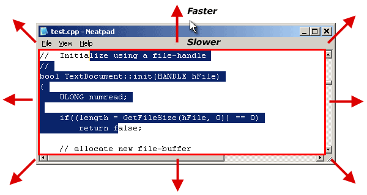
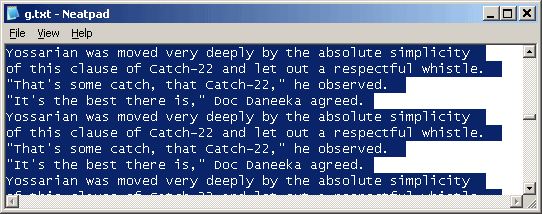
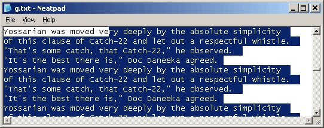
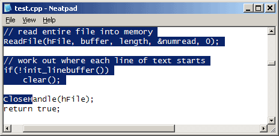
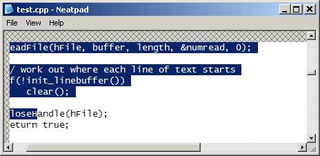
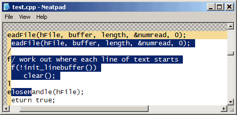
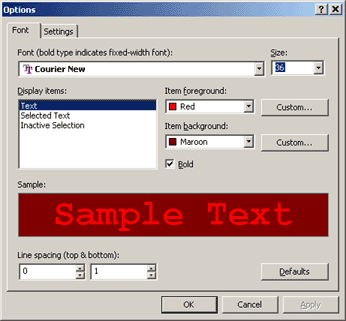

Scrolling with the Mouse
元々、私はマウスに関連するすべての概念を1つのチュートリアルにまとめようと考えていました。問題は、マウススクロールが、マウスのチュートリアル（part#5）に属するのか、スクロールのチュートリアル（part#3）に属するのかということです。最終的には、マウススクロールを別のトピックにすることにしました。実際には、基本的なマウスの選択（スクロールなし）と、完全に動作する選択可能でスクロール可能なコントロールとの間の進行状況がよくわかるので、非常にうまくいっています。
Scrolling with the mouse
マウススクロール」の基本的な考え方は、選択中にマウスがウィンドウの外にドラッグされたときに、ウィンドウをスクロールさせるというものです。スクロールバー付きのウィンドウを持つほとんどのアプリケーションは、何らかの形でマウススクロールをサポートしています。今お使いのブラウザで試してみてください。テキストを選択して、左ボタンを押したまま、ブラウザのウィンドウの外にマウスをドラッグします。自動的にコンテンツがスクロールして表示されます。
私たちがしなければならない最初のステップは、マウスがウィンドウから離れたことを検知して、何らかの適切なスクロールアクションを開始することです。幸いなことに、すでにTextView::Scroll（part#3で書いた）があるので、このチュートリアルで使うことができます。
さて、メモ帳を簡単に見てみると、マウススクロールをどのように処理しているかがわかります。メモ帳（というか、組み込まれているEDITコントロール）は、マウスがウィンドウの枠から出たことを検知して動作しますが、これはマウスが動いている間だけです。EDITコントロールがマウスの動きを受け取らなくなると、スクロールは止まります。そこで、この非常に基本的な機能を実現するために、まずWM_MOUSEMOVEハンドラに、マウスがTextViewの外に出たことを検出するコードを追加します。
RECT rect;
POINT pt = { mx, my };
// get the non-scrolling area (an even no. of lines)
GetClientRect(m_hWnd, &rect);
rect.bottom -= rect.bottom % m_nLineHeight;
// detect where mouse is
if(PtInRect(&rect, pt) == FALSE) {
// mouse is outside window, scroll in that direction
この基本的な方法では、「大人の」エディターには不十分なので、もう一歩踏み込んだ方法をとる必要があります。タイマーを使って定期的にスクロールイベントを発生させます。しかし、それだけではなく、可変速度のスクロールをどうするかという問題にも注目します。例えば、多くのコントロールは、マウスがウィンドウのすぐ外にあるときはウィンドウのコンテンツをゆっくりとスクロールし、マウスがだんだん遠くに行くと徐々にスピードを上げていきます。以下の図は、このアイデアを説明するのに役立つでしょう。
">
内側の赤い四角は、ウィンドウのクライアント領域を表しています。マウスがこの領域内にあるときは、スクロールの必要はありません。マウスが遠くに移動すると（赤い矢印で表示）、ウィンドウは適切な速度でその方向にスクロールします。
// If mouse is within client area, we don't need to scroll
if(PtInRect(&rect, pt))
{
if(m_nScrollTimer != 0)
{
KillTimer(m_hWnd, m_nScrollTimer);
m_nScrollTimer = 0;
}
}
// If mouse is outside window, start a timer in
// order to generate regular scrolling intervals
else
{
if(m_nScrollTimer == 0)
{
m_nScrollCounter = 0;
m_nScrollTimer = SetTimer(m_hWnd, 1, 10, 0);
}
}
Variable speed scrolling
可変速度スクロールを実現するために、いくつかの方法がありますが、すべての方法はWM_TIMERとSetTimer APIに基づいています。第1の方法は、マウスがウィンドウに近づいたり遠ざかったりするたびに、 タイマーの間隔を再プログラムして、ウィンドウが受け取るWM_TIMERメッセージの 速度を速くしたり遅くしたりするものです。WM_TIMERを受信すると、マウスがどの方向にいても、+1/1のスクロールをします。これは、SetTimerが呼ばれるたびにタイマーがリセットされることになるので、ちょっと面倒です。SetTimerに関するMSDNの抜粋から以下をご覧ください。
"hWndパラメータがNULLではなく、hWndで指定されたウィンドウが値nIDEventを持つタイマーをすでに持っている場合、既存のタイマーは新しいタイマーで置き換えられます。SetTimerがタイマーを置き換えると、タイマーはリセットされます。したがって、メッセージは現在のタイムアウト値が経過した後に送信されますが、以前に設定されたタイムアウト値は無視されます。"
この動作が問題（動きの乱れなど）を引き起こすかどうかはわかりません。しかし、私がこのテクニックを避けたい主な理由は、2次元スクロールをうまくサポートしていないからです。次のようなシナリオを想像してみてください：マウスはTextViewの上部からかなり離れたところに保持されていますが（垂直スクロール方向）、左側にはすぐに出てきます（水平方向）。スクロール速度はどの方向を基準にすればよいのでしょうか？答えは、この手法では、縦方向の高速スクロールと横方向の低速スクロールを同時に行うことはできません。
次の方法は、ゆっくりとした速度で設定された一定のタイマー間隔を使用することです。マウスがウィンドウから離れていくと（どちらかの次元で）、スクロールが速くなる代わりに、スクロールする距離が長くなります。これは完全に合理的な方法であり、多くのコントロールがこの方法でスクロールを行っているのを見ることができます。
最後の方法は、先ほどの方法と似ていますが、代わりにタイマーを高いリピート率（例：10ms）になるようにプログラムします。この速い間隔により、マウスがウィンドウから最も離れているときに、ウィンドウを素早くスクロールすることができます。そして、マウスを近づけると、選択したWM_TIMERメッセージの処理を単純に「スキップ」することができます。たとえば、全速力でスクロールするときはすべてのWM_TIMERを処理し、半速力では2回に1回、超低速では5回に1回の割合で処理します。これにより、スムーズなスクロールが可能になりますが（常に1行ずつスクロールします）、より多くの再描画が必要となるため、より多くのCPUを必要とします。この方法は、一度に1行しかスクロールしないので、コーディングやデバッグの観点からは少しシンプルになるという利点があります。
Neatpadでは、単純に楽なので#3の方法を選択しました。
Avoiding flicker
Perhaps the reason that many text-editors exhibit flickering artifacts when they are scrolled up and down is because mouse-scrolling (in general) is so hard to get right. I do hate any sign of flickering though so it is very important from my point to view to ensure that Neatpad suffers no such problems.
おそらく、多くのテキストエディタが上下にスクロールしたときにフリッカー現象を起こすのは、マウススクロール（一般的に）が非常に難しいからだと思います。しかし、私はちらつきを嫌うので、Neatpadがそのような問題を起こさないようにすることは、私の観点からは非常に重要です。
">
最初のちらつきの問題は、マウスがウィンドウの外に移動すると、選択範囲が再描画され、一時的にウィンドウの外に出てしまうために起こります。その後、ウィンドウがスクロールされ、選択範囲の端が再び表示されます。これにより、カーソルの左側の領域が、選択状態と非選択状態の間で切り替わるように見えるのです。私にとっては非常に不安な問題ですが、多くのWindows標準コントロールを含め、多くのコントロールでこの問題が発生します。この問題を防ぐには、選択範囲の終点を決める前に、マウスの座標をウィンドウの端に「クリップ」しておく必要があります。
">
2つ目のケースは1つ目のケースとほぼ同じですが、今回はスクロールが先に発生し、ディスプレイ全体が下にスクロールしてしまいます。選択範囲はスクロールの後に上方向に拡張されますが、このときもかなり厄介なちらつきが発生します。今回は、1行目の非選択領域が（誤って）下方向にスクロールされ、一時的に非選択テキストとして表示されますが、その後正しくハイライトとして再描画されます。この問題を防ぐには、ウィンドウをスクロールするときにクリッピングを使用することもできます。この場合、スクロールする領域を、上下の線を含まない特定の領域に制限します。
マウスの選択とスクロールを正しく同期させるのは簡単ではありません。基本的な問題は、この2つのアクションを別々のイベントとして扱うことができないということです。さらに、スクロールと選択の機能はすでに記述されているので、これらをできるだけ「別」にして、コードをすっきりさせることができればいいのですが、問題はそれだけではありません。それでは、これまでの流れを簡単に振り返ってみましょう。
TextView::Scroll(int dx, int dy)このルーチンは、ディスプレイ全体を指定された方向にスクロールし、同時にスクロールバーの位置も更新します。TextView::MouseCoordToFilePos(...)
スクロールバーの位置を考慮して、マウス下のカーソル位置を取得します。TextView::InvalidateRange(...)
指定した範囲のテキストを、スクロールバーの位置も利用して再描画します。
マウスの動きを同期させるための基本的な戦略は、以下の通りです。
- スクロールする方向に応じて、正しいクリッピング領域を決定する。例えば、上にスクロールする場合は、一番上の行をスクロールから除外する。左にスクロールしている場合は、左端の列を除外します。これはすべて既存のTextView::Scrollルーチンの中で行われます。
- ScrollWindowExを使ってウィンドウをスクロールしますが、その際、手順1で作成したクリッピング・レクタングルを使用します。
- 新しいカーソル位置と選択終了点を計算します。スクロールはスクロールバーの位置を変更する効果があります（TextView::Scrollを使用したため）ので、このスクロールが行われた後に新しいカーソル位置を計算しなければなりません。
- スクロールされなかった領域（クリッピング矩形の外側の領域）を再描画する。
つまり、実際に行っているのは、ウィンドウのサブ領域をスクロールし、カーソルや選択の終点が適切に配置された後に、スクロールしなかった領域を手動で再描画することです。これらをどのように組み合わせていくかで、成功するかどうかが決まります。
ScrollWindowEx
それでは、ScrollWindowExを見て、どのようなスクロール機能があるのかを知っておきましょう。
int ScrollWindowEx(
HWND hWnd, // handle to window
int dx, // horizontal scrolling
int dy, // vertical scrolling
RECT * prcScroll, // client area [optional]
RECT * prcClip, // clipping rectangle [optional]
HRGN hrgnUpdate, // handle to update region [optional]
RECT * prcUpdate, // invalidated region [optional]
UINT flags // scrolling options
);
ここでは、使用する2つのオプションパラメータを（太字で）強調していますが、まず、すべてのパラメータについて簡単に説明することが、この段階では適切でしょう。
- hWndはスクロールさせたいウィンドウです。ここでは、m_hWnd（TextView）とします。
- dxとdyは、ウィンドウをスクロールする方向（ピクセル単位）を指定します。これらの値は正負どちらでも構わないので、任意の方向へのスクロールに使用できます。
- prcScrollは、スクロールする領域を定義するRECT構造体へのポインタです。このパラメータが NULL の場合、クライアントの全領域がスクロールされます。それ以外の場合は、....
- prcClipは、「クリッピング用の矩形」を定義するRECT構造体へのポインタです。この矩形は、スクロールされる可能性のあるウィンドウ領域のクライアント座標です。この矩形の外側の領域がスクロールの影響を受けることはありません。
- hrgnUpdateは、HRGN(handle-to-region)です。これはオプションですが、指定された場合は有効な領域として初期化されていなければなりません（何にするかは問題ではありません）。ScrollWindowExが戻るとき、hrgnUpdateは、スクロール後に無効になったウィンドウの領域を表します。これは、一度に2次元にスクロールしている場合、不規則な形になる可能性があります。
- prcUpdateはもう一つのRECT構造体で、更新領域（上図）の境界矩形を受け取ります。hrgnUpdateはCOMPLEXREGIONである可能性があるため、単純なRECT構造ではこれらの領域を正確に表現できないので、これはあまり役に立ちません。
- flagsは、単純な32ビットの値です。通常、この値はSW_INVALIDATEに設定され、ScrollWindowExにスクロール後に無効になった領域を自動的に無効にし、ウィンドウの更新領域に追加するように指示します。次にウィンドウがWM_PAINTを処理したとき、この無効な領域は再描画されます。これは、（このパラメータが指定されていれば）hrgnUpdateに格納されていた同一の領域です。しかし、ここで0を渡すと、hrgnUpdateは無効にならないので、後で必要に応じてこの領域を再描画する機会が得られます。
スクロールの方法（保護している領域から常に遠ざかるようにスクロールします）により、prcScroll と prcClip のどちらの矩形を使っても問題ありません - どちらの矩形も同じ値を保持し、効果は同じになります。ソースコードでは、prcClipを使うことにしました。それは、何のために使われているのかが少しわかりやすいからです。
Scrolling Example
この時点では、スクロールの例を見て、クリッピング・レクタングルや更新/無効領域で何が起こっているのかを正確に理解する必要があります。
">
上の写真は、スクロールする前のNeatpadのウィンドウです。ウインドウは、上と左に同時にスクロールされる予定です（つまり、テキスト文字単位で -1, -1）。ただし、これはコンテンツを下に 1 行、右に 1 文字分スクロールすることを意味します (上端/左端に新しいコンテンツを露出させるため)。つまり、ScrollWindowEx の dx および dy パラメータは正の値になります。
">
ScrollWindowEx関数が呼び出される前に、使用するクリッピング レクタングルを定義します。クロスハッチのシェーディング領域は、クリッピング レクタングルの外側にあるコンテンツを表します。この領域はスクロールによって無効になったり変更されたりすることはありませんが、基本的には「ダーティ」であり、手動で再描画する必要があります。ScrollWindowExに渡すクリッピング レクタングルは、シェーディングされていないコンテンツ/テキストのクライアント領域をカバーします。この例では、クライアント領域の左上隅を取り、それをオフセットしてクリッピング レクタングルを作成しています。
">
ScrollWindowExの後のウィンドウです。コンテンツが下に1行、右に1文字スクロールしているのがわかると思います。クロスハッチや網掛けの部分は、クリッピング レクタングルの外側にあるため、そのままの状態になっています。反転した領域は、スクロールした後に無効になった領域を表しています。実際には、これらのピクセルはScrollWindowExによって変更されることはなく、SW_INVALIDATEフラグが指定された場合にのみ更新されます。
注: hrgnUpdateパラメータを使用していた場合、このHRGNオブジェクトは、反転した色で表される領域にぴったり合うように変更されます。これは非常に奇妙な形（逆さまの「L」）で、この例ではhrgnUpdateを使用していないにもかかわらず、ScrollWindowExはCOMPLEXREGIONを返します。
クロスハッチと反転した領域の両方を更新する必要があります。簡単にするために、ScrollWindowExを呼び出す際にSW_INVALIDATEを使用し、「反転」領域を無効にして（結果的に更新して）います。しかし、これではクロスハッチの領域が残ってしまいます。この領域を記述したHRGNを手動で作成し、後からInvalidateRgnを呼び出して再描画する必要があります。この方法については以下を参照してください。
Synchronized Scrolling
まず最初にしなければならないことは、この「切り取られた」スクロールのサポートを開発することです。私は既存のTextView::Scrollルーチンを書き直し、TextView::ScrollRgnと名付けました。これはスクロール後に無効な領域へのハンドルを返すかどうかを指定する追加のパラメータを持っています（そして間接的にクリッピング動作をコントロールします）。
fReturnUpdateRgnがtrueの場合、適切なクリッピングでスクロールが実行され、HRGNが呼び出し元に返されます。fReturnUpdateRgnがfalseの場合、ウィンドウ全体が通常通りスクロールされます（つまり、クリッピング領域が定義されていません）。
HRGN TextView::ScrollRgn(int dx, int dy, bool fReturnUpdateRgn)
{
RECT clip;
GetClientRect(m_hWnd, &clip);
// adjust the clipping rectangle fReturnUpdateRgn is false
// do the scrolling
ScrollWindowEx(m_hWnd,
-dx * m_nFontWidth,
-dy * m_nFontHeight,
NULL, // scroll the entire window
&clip, // clip the non-scrolling part
NULL,
NULL,
SW_INVALIDATE
);
if(fReturnUpdateRgn)
{
RECT client;
GetClientRect(m_hWnd, &client);
HRGN hrgnClient = CreateRectRgnIndirect(&client);
HRGN hrgnUpdate = CreateRectRgnIndirect(&clip);
// create a region that represents the area outside the
// clipping rectangle (i.e. the part that is never scrolled)
CombineRgn(hrgnUpdate, hrgnClient, hrgnUpdate, RGN_XOR);
DeleteObject(hrgnClient);
return hrgnUpdate;
}
return NULL;
}
既存のTextView::Scrollの機能を維持することが重要なので、これをTextView::ScrollRgnのラッパー関数とし、fReturnUpdateRgnにfalseを指定します（つまり、ScrollRgnは通常通りウィンドウ全体をスクロールします）。
VOID TextView::Scroll(int dx, int dy)
{
ScrollRgn(dx, dy, false);
}
ここで一つ触れておきたいのは、ScrollとScrollRgnが使用する単位です。これらの単位は、ピクセル座標ではなく、常に「テキスト」単位(つまり、行/文字ベース)です。ScrollRgn関数は、スクロールするときにこれらをピクセル座標に変換します。また、Scroll(-1, -1)と記述すると、ドキュメントが上/左にスクロールされますが、これを実現するために画面のコンテンツが下/右にスクロールされることをご理解ください。
以下の関数は、TextView::OnTimerルーチンの「ほぼ」完全な実装です。省略されているのは、dxとdyの値を計算するコードだけです。この部分がない方がわかりやすいので、ソースコードをダウンロードして、どのように行われているかを見てください。
LONG TextView::OnTimer()
{
// [omitted] work out scrolling increments
int dx, dy;
// do the scroll but return the region to be manually painted
HRGN hrgnUpdate = ScrollRgn(dx, dy, true);
if(hrgnUpdate != NULL)
{
// do a "fake" WM_MOUSEMOVE to get the new cursor position
OnMouseMove(0, mouse_x, mouse_y);
// manually repaint the update region
InvalidateRgn(m_hWnd, hrgnUpdate, FALSE);
DeleteObject(hrgnUpdate);
UpdateWindow(m_hWnd);
}
}
この関数は、スムーズで同期したスクロールのための基準をすべて満たしています。まず、ウィンドウのコンテンツがスクロールされますが、手動で再描画が必要な無効な領域を指定する HRGN が返されます。テキストキャレットと選択範囲のオフセットは、スクロールした後（m_nxScrollPos変数が有効になったとき）に計算されます。これは、手動でOnMouseMoveを呼び出し、すでにあったコードを再利用することで実現しています。タイマーが鳴っている間にマウスが動かされた場合に備えて、OnMouseMoveが選択変更の影響を受けた領域を無効にするという事実も利用しています。
最後に行われるのは、ScrollRgnによって返された領域を手動で無効にすることです。無効になったウィンドウ領域は、UpdateWindowが呼ばれたときに、更新されたカーソルと選択範囲のオフセットを使って、最終的に再描画されます。
Neatpad additions
このチュートリアルシリーズのほとんどは、NeatpadのTextViewコンポーネントに焦点を当てています。私は、TextViewのサポートに直接関係しない限り、Neatpadの開発を詳細に説明するつもりはありません。その代わりに、何が追加されたかを簡単に説明し、読者が自由にソースコードを勉強できるようにします。
">
今回、オプションダイアログが実装され、Neatpadが使用するフォントと色を選択できるようになりました。このダイアログはかなり完成度が高く、Neatpadが終了するたびに設定がレジストリに保存されます。2番目のオプションペインはまだ何もしていませんが、将来のある時点で実装されるであろう「Todo」として残してあります。コードは、Neatpadディレクトリ内のOptions.cとOptionsFont.cファイルにあります。
TextViewに新しいメッセージ（TXM_SETCOLOR）が追加され、色の設定をプログラムで制御できるようになりました。
#define TXM_SETCOLOR (TXM_BASE + 5)
// wParam = TXC_xxx index value
// lParam = RGB color#define TextView_SetColor(hwndTV, nIndex, rgbColor)
メッセージを送信するには、TextView_SetColorマクロを使います。nIndexは、TXC_xxxの数字の範囲から取られたゼロベースの値で、rgbColorは、COLORREFのRGBの色です。例えば、選択範囲の背景色を設定するには、次のようなコードを使用します。
TextView_SetColor(hwndTV, TXC_HIGHLIGHT, RGB(200,100,240));
このメッセージには、気に入ってもらえると嬉しい機能が1つあります。色を定義済みのシステムカラー（GetSysColorで使われるCOLOR_WINDOWTEXTなど）の一つに設定したい場合は、SYSCOLマクロ（TextView.hで定義）を使います。
TextView_SetColor(hwndTV, TXC_HIGHLIGHT, SYSCOL(COLOR_3DFACE));
SYSCOLマクロは、TextViewが単なるRGB値ではなく、システムカラーとして認識する「特別な」RGB値を作成します。この方法で色を設定するのは一度だけで、その後のシステムカラースキームの変更は自動的にTextViewに反映されます。
Coming up in Part 7
ここまでで、マウスの選択範囲を使ったスクロール方法の概要と説明ができたと思います。特に技術的なテーマではありませんが、マウスとタイマーのインタラクションの微妙な違いを解明し、これらのインタラクションを視覚化しながらこのようなデザインをする（そしてそれを記事にする！）ことはかなり難しいことです。
では、次のチュートリアルに入ります。第7回は、もう少しシンプルに、ボーダーとマージンのサポートを実装してみます。マージンは、行番号やカスタムアイコンを「選択」領域に表示する機能を提供します（Visual Studioがブレイクポイントを置くときに使うような機能です）。また、テキスト文書の印刷可能な領域が、印刷によって切り取られる可能性のあるテキストと区別できるように、右側に「プリンタマージン」を提供したいと考えています。
これまでのチュートリアルでは、Neatpadのグラフィックやユーザーインターフェースに焦点を当ててきたことにお気づきでしょうか。これは、複雑なメモリやファイル管理のテクニックに飛び込む前に、しっかりとした基礎を身につけることが重要だと考えているため、意図的に行っているものです。経験上、GUIが中途半端だと気が散ってしまうので、GUIの詳細をすべて完成させたいのです。